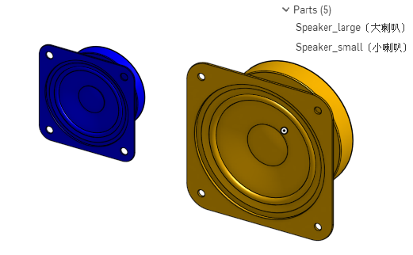
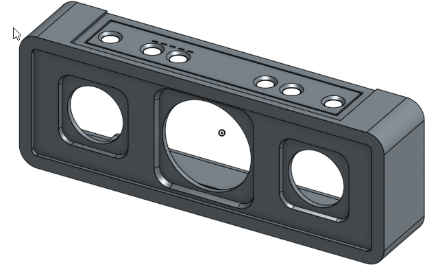
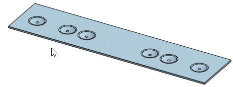
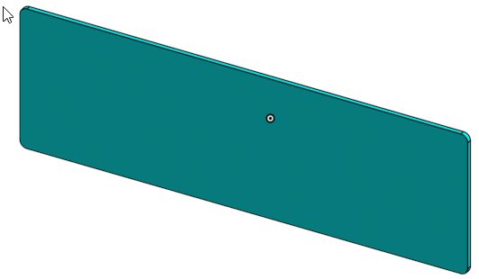
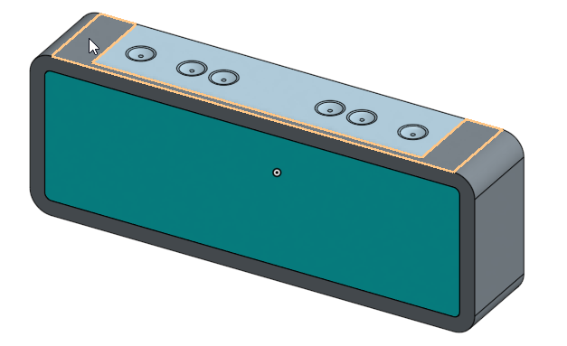
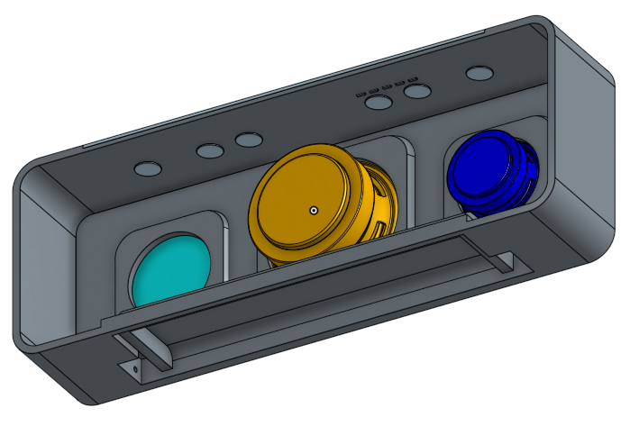
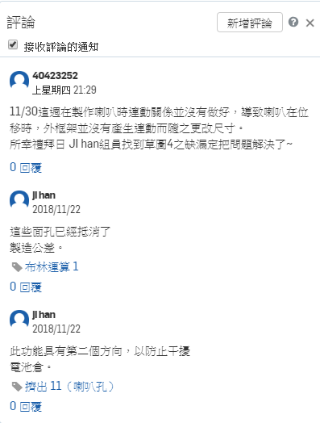

簡介 << Previous Next >> Week 6 Homework
Week 6 Lesson Plan
課綱：依照課程內容按部就班的繪製出藍芽喇叭。
名稱：藍芽喇叭（實體連結在這裡）
| Part零件名稱 |
Part零件外觀圖 |
| 小喇叭、大喇叭 |
 |
| 外殼框架 |
 |
| 按鈕板+LED燈 |
 |
| 聲音屏障 |
 |
____________________________________________________________
將步驟由上至下逐個介紹各特徵和草圖的用途
依文字顏色區分零件上的草圖跟特徵
- 導出1、2：匯入已畫好的大(小)喇叭。
- 轉移1、2：輸入XYZ座標，配合接下來的草圖繪製。
- 草圖1：為外殼框架的草圖。
- 擠出1：雙向填料，長出框架厚度。
★三個圓沒有一起長！
- 草圖2：為聲音屏障位置的草圖。
- 擠出2：除料，使聲音屏障有位置可放(-Y軸)。
- 擠出3：填料，長出屏障厚度。
- 草圖3：為大喇叭框的草圖。
- 擠出4：拔模除料草圖3(-Y軸)。
- 草圖4：為小喇叭框的草圖。
- 擠出5：拔模除料草圖4(-Y軸)。
- 草圖5：為儲放電池的地方。
- 擠出6：雙向除料。
- 草圖6、7：為電池蓋放置處。
- 擠出7、8：除料，最後與電池放置處高度相同。
- 薄殼1：選擇外殼框架後面。
- 草圖8、9：在擠出8的外壁上畫圓。
- 擠出9、10：將做為電池蓋旋轉的中心。
- 擠出11：雙向除料，為大(小)喇叭孔。
★第一方向從中心往外貫穿，第二方向從中心到薄殼面，故重疊的地方會抵消，所以最後方向是從薄殼到完全貫穿！
★如果從中心直接貫穿將會除到下方電池的位置，所以必須避開。
- 草圖10：為按鈕板的草圖。
- 擠出12：填料，長出板子厚度(-Z軸)。
★現在與框架實體有衝突到，到後面會有步驟來解決，可先忽略。
- 草圖11：為按鈕的草圖。
- 擠出13：填料，長出按鈕的高度(-Z軸)。
- 倒角1：在按鈕板與按鈕的邊線進行倒角。
- 草圖12：為單個LED的草圖。
- 擠出14：填料，長出LED的高度(-Z軸)。
- 線性複製排列1：採特徵複製擠出14。
- 草圖13：為按鈕板的與框架的卡槽。
- 擠出15：填料，長出卡槽的高度(-Z軸)。
- 布林運算1：差集，工具為按鈕板、目標為外殼框架，並保留工具，即可自動將衝突的地方依設定進行除料。
- 擠出16：拔模除料，為板子外觀上的按鈕(Z軸)。
- 圓角1、2：為外觀按鈕上的圓角。
完成品前後視圖

____________________________________________________________________________________________
小組討論紀錄：
利用Onshape的內建功能（評論），將各組員對步驟有疑問的問題記下來，還有做完的心得。

簡介 << Previous Next >> Week 6 Homework